13 | Operatore CdP
Ricerca e consultazione soste e soste per Unità da Diporto
Una panoramica dei flussi di ricerca e consultazione delle soste e soste per Unità da Diporto, per orientarti passo dopo passo.
- Profilo: Responsabile Locale
01.
Ricerca e consultazione di una sosta
Una panoramica sui flussi di ricerca e consultazione delle Soste.
Profilo: Responsabile Locale
Ricerca e consultazione di una sosta
Punti di accesso per la ricerca soste
La ricerca di una sosta avviene:
Menu a tendina
Cliccando sulla voce "Gestione e consultazione" viene visualizzato un menu a tendina, da cui è possibile accedere alla voce "Soste", al cui interno è possibile ricercare le soste presenti a sistema.
Dalla dashboard, oltre a visualizzare una panoramica delle soste giornaliere, è possibile ricercarle attraverso l'apposita sezione: "Ricerca sosta".
Sarà possibile visualizzare le soste nella sezione "Soste nel porto di oggi".
Nella sezione Panoramica, nella voce "Lista soste" sarà presente l'elenco delle soste.
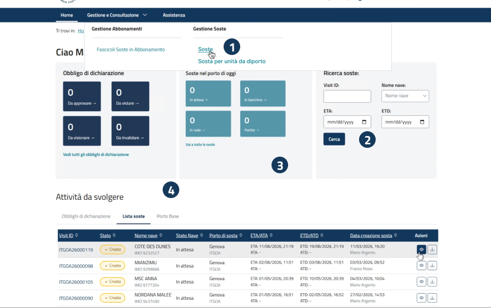
Ricerca e consultazione di una sosta: lista soste
Funzionalità in pagina
Accedendo alla sezione "Lista soste", il sistema mostra i filtri di ricerca disponibili, sia di base sia avanzati. Dopo aver selezionato i criteri desiderati e cliccato su "Cerca", i risultati vengono visualizzati in forma tabellare.
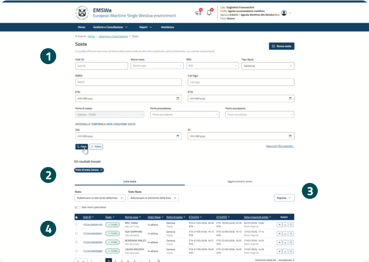
Sezione filtri
La sezione Filtri consente di ricercare le soste secondo diversi criteri. Sono disponibili filtri base e filtri avanzati per affinare la ricerca.

Visualizzazione di "Lista soste" o "Aggiornamento soste"
È possibile scegliere di visualizzare i risultati di ricerca della lista soste e degli aggiornamenti delle soste.

Filtri e azioni sulla tabella
I risultati della ricerca possono essere filtrati per "Attività" e "Stato Attività". È possibile esportare e, per "Lista soste", sarà possibile visualizzare solo le soste aventi merci pericolose tramite l'apposito pulsante.
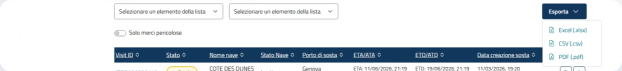
Visualizzazione soste tramite tabella
I risultati della ricerca vengono presentati in una tabella, mostrando le informazioni e azioni principali.
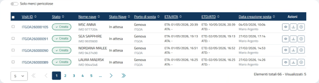
Ricerca e consultazione di una sosta
Focus sull'azione di visualizzazione delle merci pericolose (Lista soste)
È possibile visualizzare o nascondere le merci pericolose tramite l'interazione con il pulsante evidenziato.
Pulsante disattivato
Di default il pulsante sarà disattivato, saranno visualizzate tutte le soste.
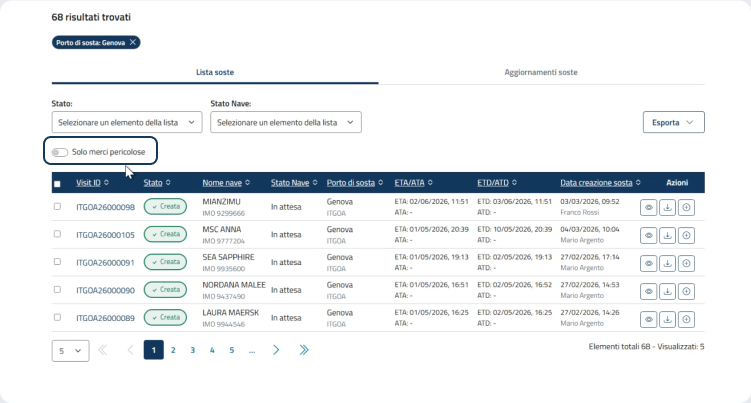
Pulsante attivo
Se il pulsante è attivo, saranno mostrate solo le soste per quelle navi che dichiarano di trasportare merci pericolose.
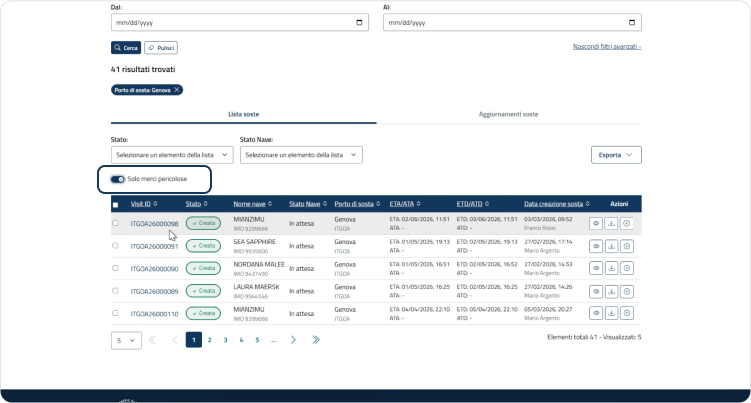
Ricerca e consultazione di una sosta
Visualizzazione risultati in tabella: Lista Soste e Aggiornamento soste
I risultati di ricerca delle soste possono essere visualizzati tramite tabella secondo due modalità:
Lista Soste
È l'elenco di tutte le soste presenti a sistema, sulle quali è possibile accedere al dettaglio e svolgere diverse azioni in relazione alla responsabilità dell'utente.
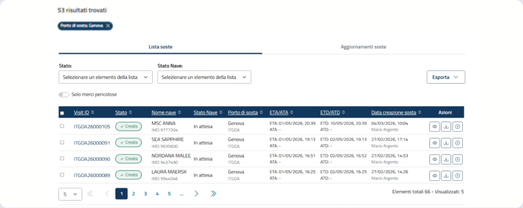
Aggiornamenti soste
È un elenco di attività che l'utente deve svolgere per gestire gli Obblighi di Dichiarazione presenti nelle soste. Sarà possibile filtrare i risultati in tabella per "Attività" e "Stato Attività".
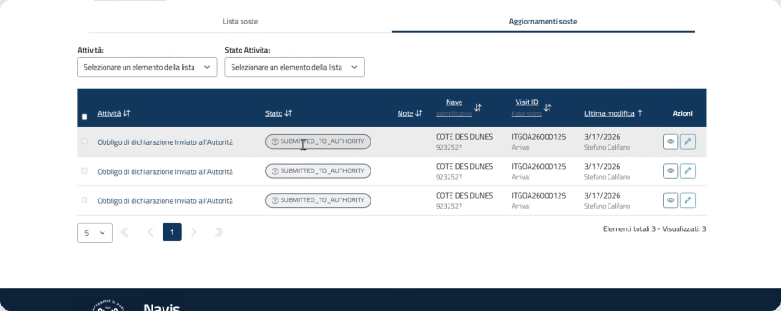
Ricerca e consultazione
Dettaglio della sosta
All'interno del fascicolo sono consultabili le seguenti informazioni:
- Informazioni sosta;
- Informazioni aggiuntive;
- Obblighi di dichiarazione:
- Comunicazioni;
- Controlli frontiera;
- Merci;
- Rifiuti;
- Sicurezza;
- FAL.
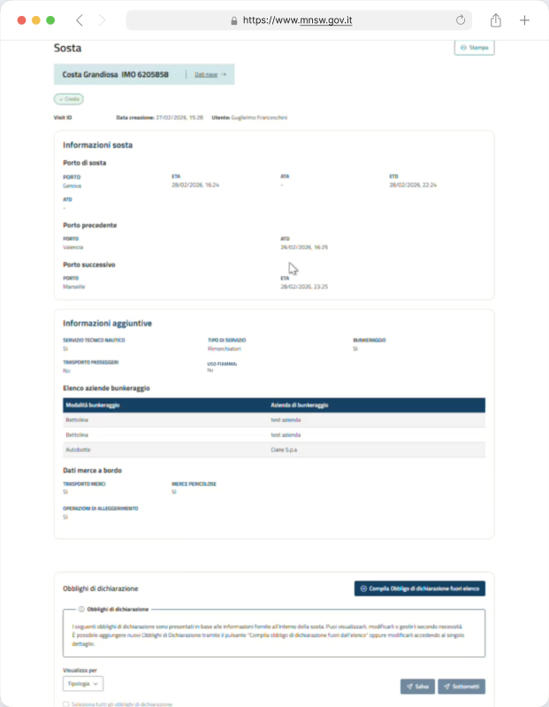
Nell'elenco degli Obblighi di Dichiarazione saranno visualizzati solo gli Obblighi di Dichiarazione inviati dal Declarant e di competenza dell'utente che ha effettuato l'accesso al sistema.
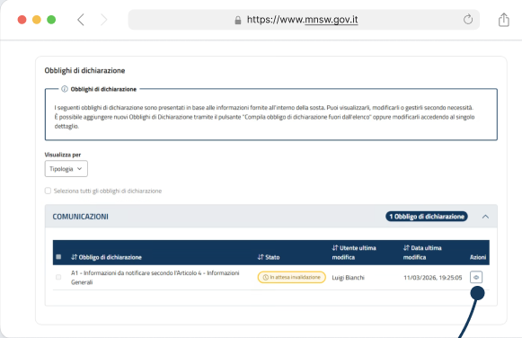
Possibili azioni sugli Obblighi di Dichiarazione
Visualizzazione dettaglio
02.
Ricerca e consultazione sosta per unità da Diporto
Una panoramica sui flussi di ricerca e consultazione delle soste per unità da Diporto.
Profilo: Responsabile Locale
Ricerca e consultazione sosta per unità da Diporto
Punti di accesso per la ricerca soste per unità da Diporto
La ricerca di una sosta per unità da Diporto avviene tramite:
Menu a tendina
Cliccando sulla voce "Gestione e consultazione" viene visualizzato un menu a tendina, da cui è possibile accedere alla voce "Soste per unità da diporto", al cui interno è possibile ricercare le soste per unità da diporto presenti a sistema.
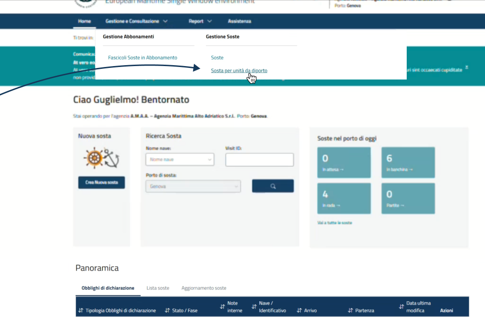
Ricerca e consultazione di una sosta per unità da Diporto: lista soste
Funzionalità in pagina
Accedendo alla sezione "Lista soste", il sistema mostra i filtri di ricerca disponibili, sia di base sia avanzati. Dopo aver selezionato i criteri desiderati e cliccato su "Cerca", i risultati vengono visualizzati in forma tabellare.
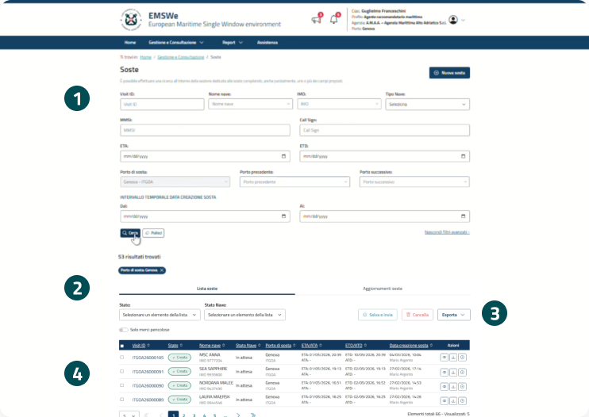
Sezione filtri
La sezione Filtri consente di ricercare le soste secondo diversi criteri. Sono disponibili filtri base e filtri avanzati per affinare la ricerca.
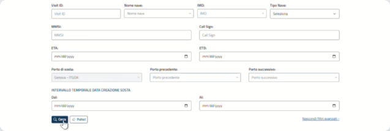
Visualizzazione di "Lista soste" o "Aggiornamento soste"
È possibile scegliere di visualizzare i risultati di ricerca della lista soste e degli aggiornamenti delle soste.
Filtri e azioni sulla tabella
I risultati della ricerca possono essere filtrati per "Attività" e "Stato Attività". Selezionando una o più soste è possibile salvare, cancellare ed esportare. Infine, per "Lista soste", sarà possibile visualizzare solo le soste aventi merci pericolose tramite l'apposito pulsante.
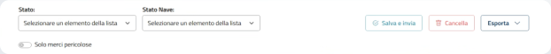
Visualizzazione soste tramite tabella
I risultati della ricerca vengono presentati in una tabella, mostrando le informazioni e azioni principali. Con il pulsante "Aggiungi operazione" è possibile aggiungere un'operazione alla sosta: focus su "Gestione Operazioni".
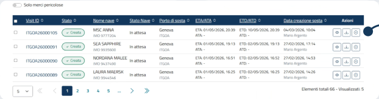
Ricerca e consultazione sosta per unità da Diporto
Visualizzazione risultati in tabella: Lista Soste e Aggiornamento soste
I risultati di ricerca delle soste possono essere visualizzati tramite tabella secondo due modalità:
Lista Soste
È l'elenco di tutte le soste presenti a sistema, create dall'utente che ha effettuato l'accesso, sulle quali è possibile accedere al dettaglio e svolgere diverse azioni.
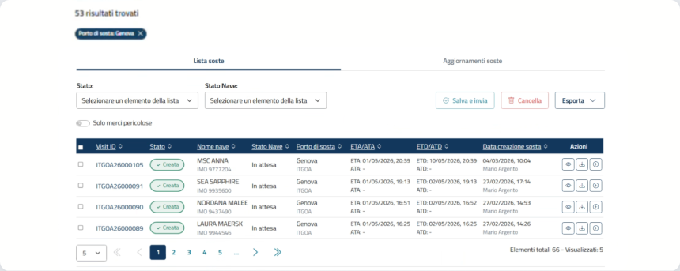
Aggiornamenti soste
È un elenco di attività che l'utente deve svolgere sia per gestire le soste create dal Collaboratore, sia per integrare gli Obblighi di Dichiarazione. Sarà possibile filtrare i risultati in tabella per "Attività" e "Stato Attività".
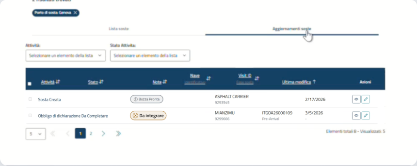
Ricerca e consultazione di una sosta per unità da Diporto
Dettaglio della sosta
All'interno della pagina sono consultabili le seguenti informazioni:
- Informazioni sosta;
- Informazioni aggiuntive;
- Obblighi di dichiarazione:
- Comunicazioni;
- Controlli frontiera;
- Merci;
- Rifiuti;
- Sicurezza;
- FAL.
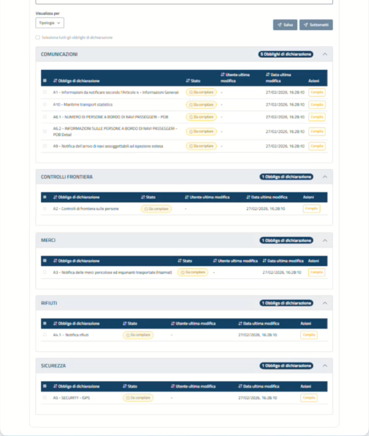